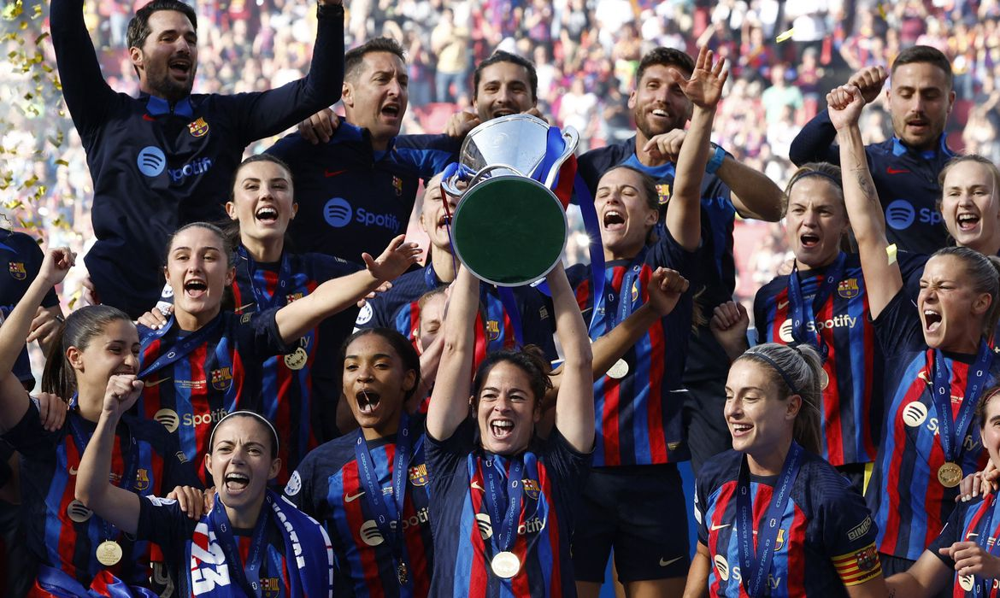

Desde 2016, quando reativou a modalidade,
o clube paulista ostenta 14 taças em
sua galeria de troféus, são elas:
Copa do Brasil Feminina 2016.
Libertadores Feminina de 2017.
Campeonato Brasileiro Feminino 2018 .
Copa Libertadores Feminina 2019.
Campeonato Paulista Feminino 2019.
Campeonato Brasileiro Feminino 2020.
4º – VfL Wolfsburg Frauen
Títulos (20)
2º Frauen-Bundesliga 2022/23. JogosEstatísticas da Equipa.
1.º Frauen DFB Pokal 2022/23. JogosEstatísticas da Equipa.
2.ª LC Fem. 22/23. JogosEstatísticas da Equipa.
3º – Chelsea
Copa do Mundo de Clubes (2021)
2 Champions Leagues (2011-12) e (2020-21)
2 Europa Leagues (2012-13) e (2018-19)
2 Taças dos Clubes Vencedores de Taças (1970-71) e (1997-98)
2 UEFA Super Cup (1998) e (2021)
6 Campeonatos Ingleses.
8 Copas da Inglaterra.
5 Copas da Liga Inglesa.
2º – Barcelona

Disputa a Primeira Divisão Feminina,
conquistou seis títulos da liga,
sete Copas da Rainha,
dez Copas da Catalunha,
uma Supercopa da Espanha
e duas Champions League.
1º – Olympique Lyonnais Féminin
8 liga dos campeões feminina,
20 liga Francesa feminina,
1 supertarça França feminina
e 12 coupe e France feminina